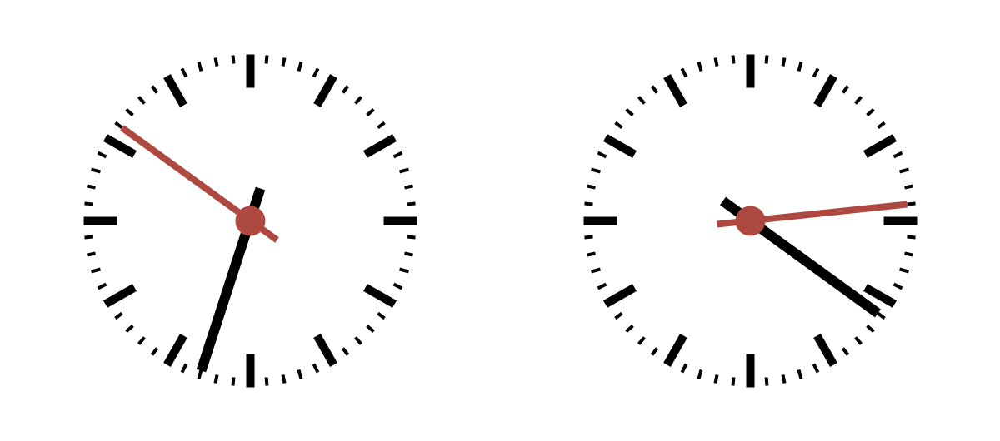

This project involves creating a chess clock that keeps track of the time spent preparing to move by each player in a game of chess.
A chess clock can be thought of as a stopwatch that keeps track of two players' time when playing a game of chess. Unlike a normal stopwatch, only one of the two clocks moves at any one time. While it is one player's turn to move their clock keeps ticking. As soon as they have moved, they press a button on the clock which stops their timer, but starts their opponent's timer. As the game progresses both clocks show the total of how long each player has taken in thinking before their move. In chess tournaments, both players have to complete their game within some fixed time limit.
For your project, can you get processing to display two clocks and then use simple keyboard interaction to stop/start each player's clock?
You might wish to think about some different variations of chess timing and different visual designs to show elapsed / remaining time. What should your sketch do when a player runs out of time?